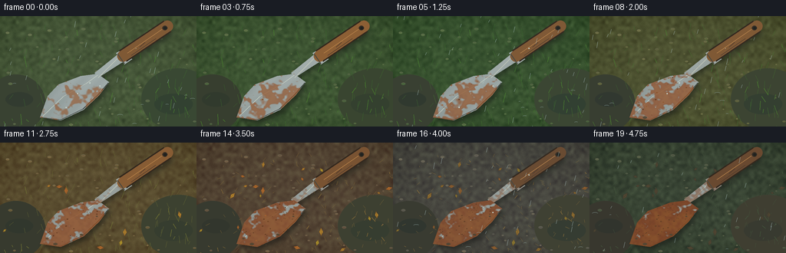
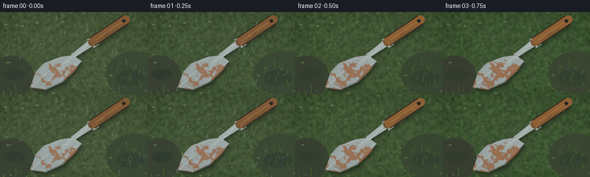

CODING AGENTS AS PIXEL WORLD MODELS
traex/GPT-5.6-Sol · material_0045
点击播放 · 原生 RGB 像素
逐轮保存的候选
回放视频、检查图与代码变化。
每份候选均可单独播放。实际图片检查记录在下方工具轨迹中。
候选 01播放与检查图
点击播放 · 原生 RGB 像素

展开代码变化
--- 上一保存版本
+++ 本次保存版本
@@ -0,0 +1,255 @@
+from pathlib import Path
+import json, math
+import numpy as np
+from PIL import Image, ImageDraw, ImageFilter
+import artifact_io
+
+CASE_DIR = Path(__file__).resolve().parent
+spec = json.loads((CASE_DIR / 'task_spec.json').read_text())
+W, H, N = spec['width'], spec['height'], spec['frames']
+S = 3
+WW, HH = W*S, H*S
+rng = np.random.default_rng(4517)
+
+def sc(v): return int(round(v*S))
+def pts(seq): return [(sc(x), sc(y)) for x,y in seq]
+def lerp(a,b,t): return tuple(int(a[i]*(1-t)+b[i]*t) for i in range(3))
+def smoothstep(a,b,x):
+ u=np.clip((x-a)/(b-a),0,1); return u*u*(3-2*u)
+
+def season_palette(t):
+ # spring -> lush summer -> ochre autumn -> cold winter
+ keys=[(0.00,(72,88,55)),(0.25,(56,83,45)),(0.49,(91,84,48)),
+ (0.68,(91,67,43)),(0.84,(75,72,64)),(1.00,(57,68,50))]
+ for (x0,c0),(x1,c1) in zip(keys[:-1],keys[1:]):
+ if t<=x1:
+ u=(t-x0)/(x1-x0)
+ return lerp(c0,c1,u)
+ return keys[-1][1]
+
+# Coherent texture fields at output resolution; fixed spatially through the timelapse.
+small = rng.normal(0,1,(42,74))
+tex = Image.fromarray(np.uint8(np.clip(128+38*small,0,255))).resize((WW,HH),Image.Resampling.BICUBIC).filter(ImageFilter.GaussianBlur(sc(.9)))
+tex_np=(np.asarray(tex).astype(np.float32)-128)/128
+fine=rng.normal(0,1,(HH,WW)).astype(np.float32)
+
+# Fixed garden details
+pebbles=[]
+for i in range(48):
+ x=float(rng.uniform(0,W)); y=float(rng.uniform(15,H)); r=float(rng.uniform(.7,2.8))
+ pebbles.append((x,y,r,float(rng.uniform(-1,1))))
+
+grass=[]
+for i in range(150):
+ x=float(rng.uniform(-5,W+5)); y=float(rng.uniform(18,H+8))
+ length=float(rng.uniform(3,15)); lean=float(rng.uniform(-5,5)); phase=float(rng.uniform(0,6.28)); z=float(rng.random())
+ grass.append((x,y,length,lean,phase,z))
+
+leaves=[]
+for i in range(23):
+ x=float(rng.uniform(4,W-4)); y=float(rng.uniform(24,H-3)); a=float(rng.uniform(-math.pi,math.pi)); sz=float(rng.uniform(2.5,5.5)); appear=float(rng.uniform(.43,.72))
+ leaves.append((x,y,a,sz,appear))
+
+# Trowel masks
+blade_poly=pts([(127,75),(142,86),(129,103),(109,122),(79,136),(52,132),(62,104),(76,89),(105,78)])
+shank_poly=pts([(128,80),(123,74),(153,50),(161,59)])
+ferrule_poly=pts([(151,48),(160,43),(172,56),(162,63)])
+blade_mask=Image.new('L',(WW,HH)); ImageDraw.Draw(blade_mask).polygon(blade_poly,fill=255)
+shank_mask=Image.new('L',(WW,HH)); ImageDraw.Draw(shank_mask).polygon(shank_poly,fill=255)
+ferrule_mask=Image.new('L',(WW,HH)); ImageDraw.Draw(ferrule_mask).polygon(ferrule_poly,fill=255)
+metal_mask=Image.fromarray(np.maximum.reduce([np.asarray(blade_mask),np.asarray(shank_mask),np.asarray(ferrule_mask)]).astype(np.uint8))
+
+# Stable corrosion field: multiscale organic noise plus distinct nuclei near the blade edge.
+rn1=rng.normal(0,1,(24,43)); rn2=rng.normal(0,1,(55,96))
+def field_img(arr,blur):
+ im=Image.fromarray(np.uint8(np.clip(128+45*arr,0,255))).resize((WW,HH),Image.Resampling.BICUBIC)
+ return np.asarray(im.filter(ImageFilter.GaussianBlur(sc(blur)))).astype(np.float32)/255
+rustfield=.58*field_img(rn1,1.0)+.42*field_img(rn2,.45)
+# Promote corrosion around edges and lower blade where water settles
+edge=np.asarray(blade_mask.filter(ImageFilter.GaussianBlur(sc(4.0)))).astype(float)/255
+inside=np.asarray(blade_mask).astype(float)/255
+edgeband=np.clip(inside-edge,0,1)
+ygrid=np.indices((HH,WW))[0]/HH
+rustfield += .18*edgeband + .08*ygrid
+# fixed round rust nuclei
+Y,X=np.mgrid[0:HH,0:WW]
+for i in range(27):
+ cx=sc(rng.uniform(65,132)); cy=sc(rng.uniform(82,127)); rad=sc(rng.uniform(2,9))
+ rustfield += rng.uniform(.05,.16)*np.exp(-((X-cx)**2+(Y-cy)**2)/(2*rad*rad))
+
+# Handle path geometry rendered as an angled capsule via thick line
+handle_a=(sc(160),sc(52)); handle_b=(sc(218),sc(13))
+
+def draw_leaf(draw,x,y,a,sz,color,outline):
+ ca,sa=math.cos(a),math.sin(a)
+ shape=[]
+ for px,py in [(-sz,0),(0,-sz*.48),(sz,0),(0,sz*.48)]:
+ shape.append((sc(x+px*ca-py*sa),sc(y+px*sa+py*ca)))
+ draw.polygon(shape,fill=color,outline=outline,width=max(1,sc(.35)))
+ draw.line([(sc(x-sz*.72*ca),sc(y-sz*.72*sa)),(sc(x+sz*.72*ca),sc(y+sz*.72*sa))],fill=outline,width=max(1,sc(.35)))
+
+def make_frame(i):
+ t=i/(N-1)
+ base=np.array(season_palette(t),dtype=np.float32)
+ # changing seasonal earth/foliage coloration while retaining coherent texture
+ arr=np.empty((HH,WW,3),np.float32)
+ arr[:]=base
+ arr += tex_np[...,None]*np.array([24,27,19])[None,None,:]
+ arr += fine[...,None]*2.7
+ # dark wet vignette, rainy intervals
+ raincycle=0.5+0.5*math.sin(i*1.57+0.5)
+ rainy=float(np.clip(.22+.7*raincycle + (.18 if i>14 else 0),0,1))
+ yy,xx=np.mgrid[0:HH,0:WW]
+ vign=np.clip(((xx-WW/2)/(WW*.72))**2+((yy-HH/2)/(HH*.75))**2,0,1)
+ arr-=vign[...,None]*13
+ arr-=rainy*5
+ arr=np.uint8(np.clip(arr,0,255))
+ im=Image.fromarray(arr,'RGB')
+ d=ImageDraw.Draw(im,'RGB')
+
+ # damp soil patches and shallow puddles
+ d.ellipse((sc(-18),sc(76),sc(59),sc(151)),fill=lerp((53,60,43),(52,47,40),t*.7))
+ d.ellipse((sc(184),sc(68),sc(281),sc(149)),fill=lerp((53,67,44),(64,53,43),t*.65))
+ # patch texture made partially transparent via overlay
+ ov=Image.new('RGBA',(WW,HH),(0,0,0,0)); od=ImageDraw.Draw(ov)
+ od.ellipse((sc(7),sc(99),sc(43),sc(118)),fill=(25,37,34,int(42+48*rainy)))
+ od.ellipse((sc(201),sc(101),sc(251),sc(128)),fill=(28,42,39,int(38+55*rainy)))
+ im=Image.alpha_composite(im.convert('RGBA'),ov).convert('RGB'); d=ImageDraw.Draw(im)
+
+ # pebbles
+ for x,y,r,v in pebbles:
+ c0=np.array(season_palette(t),float)+np.array([20+10*v,17+8*v,12+5*v])
+ c=tuple(np.uint8(np.clip(c0,0,255)))
+ d.ellipse((sc(x-r),sc(y-r*.55),sc(x+r),sc(y+r*.55)),fill=c)
+ if r>1.7: d.arc((sc(x-r),sc(y-r*.55),sc(x+r),sc(y+r*.55)),190,330,fill=(110,107,85),width=max(1,sc(.25)))
+
+ # ground grass; growth peaks in summer, dies back in winter
+ lush=1-.65*smoothstep(.48,.84,t)+.28*smoothstep(.88,1,t)
+ wind=math.sin(i*.65)*.7
+ for x,y,l,lean,ph,z in grass:
+ # leave foreground blades more visible and coherent
+ ll=l*lush*(.72+.3*math.sin(ph+t*2.1)**2)
+ autumn=smoothstep(.38,.72,t)*(1-smoothstep(.86,1,t))
+ gc=lerp((52+int(20*z),101+int(25*z),40),(135,105,50),autumn)
+ gc=lerp(gc,(63,81,53),smoothstep(.86,1,t))
+ d.line([(sc(x),sc(y)),(sc(x+lean+wind),sc(y-ll))],fill=gc,width=max(1,sc(.45 if z<.8 else .65)))
+
+ # seasonal fallen leaves accumulate, then decay/darken
+ for j,(x,y,a,sz,appear) in enumerate(leaves):
+ vis=smoothstep(appear,appear+.06,t)
+ if vis>.25:
+ # small wind shift gives timelapse life
+ xx0=x+1.2*math.sin(i*.5+j)*rainy
+ yy0=y+.4*math.cos(i*.35+j)
+ decay=smoothstep(.74,1,t)
+ col=lerp((177,103+int(25*(j%3)),38),(78,65,43),decay)
+ out=lerp((105,62,29),(52,50,38),decay)
+ draw_leaf(d,xx0,yy0,a+.08*math.sin(i+j),sz,col,out)
+
+ # tool shadow, soft and grounded
+ shadow=Image.new('L',(WW,HH)); sd=ImageDraw.Draw(shadow)
+ sd.polygon([(x+sc(3),y+sc(4)) for x,y in blade_poly],fill=145)
+ sd.line([(handle_a[0]+sc(3),handle_a[1]+sc(4)),(handle_b[0]+sc(3),handle_b[1]+sc(4))],fill=125,width=sc(17))
+ sd.polygon([(x+sc(3),y+sc(4)) for x,y in shank_poly],fill=130)
+ shadow=shadow.filter(ImageFilter.GaussianBlur(sc(3.2)))
+ sh=Image.new('RGBA',(WW,HH),(14,15,11,0)); sh.putalpha(shadow)
+ im=Image.alpha_composite(im.convert('RGBA'),sh)
+
+ # Metal base: directional brushed steel with increasing dullness.
+ metal=np.zeros((HH,WW,4),np.uint8)
+ metal[...,3]=np.asarray(metal_mask)
+ directional=(X/WW)*23-(Y/HH)*12 + np.sin((X+Y)*.085)*3
+ dull=smoothstep(.05,.75,t)
+ mb=np.stack([156+directional,166+directional,164+directional],axis=-1)
+ mb=mb*(1-.22*dull)+np.array([112,111,99])*.22*dull
+ metal[...,:3]=np.uint8(np.clip(mb,0,255))
+ im=Image.alpha_composite(im,Image.fromarray(metal,'RGBA'))
+
+ # Blade ridge and rim catch light
+ md=ImageDraw.Draw(im)
+ md.line(pts([(127,77),(112,88),(82,105),(55,131)]),fill=(205,211,198,210),width=sc(.7))
+ md.line(pts([(141,87),(128,102),(108,121),(79,135),(53,132)]),fill=(65,70,65,190),width=sc(1.0))
+ md.line(pts([(128,80),(154,54)]),fill=(205,208,190,180),width=sc(.65))
+
+ # progressive oxidation. Coverage expands smoothly and always stays stable spatially.
+ threshold=.76-.34*(t**.82)
+ cov=np.clip((rustfield-threshold)*8.5,0,1)
+ cov*=np.asarray(metal_mask)/255
+ # Less oxidation on ferrule/neck than on blade
+ cov*=np.where(np.asarray(blade_mask)>0,1.0,.48)
+ rust=np.zeros((HH,WW,4),np.uint8)
+ rust_color=np.zeros((HH,WW,3),np.float32)
+ rust_color[...,0]=126+52*np.clip(rustfield-.4,0,.5)
+ rust_color[...,1]=55+50*np.clip(rustfield-.4,0,.5)
+ rust_color[...,2]=24+20*np.clip(rustfield-.4,0,.5)
+ # Wet rust has warm saturated edges and darker mature centers
+ mature=smoothstep(.38,1,t)
+ rust_color=rust_color*(1-.12*mature)
+ rust[...,:3]=np.uint8(np.clip(rust_color,0,255))
+ rust[...,3]=np.uint8(cov*(155+80*t))
+ im=Image.alpha_composite(im,Image.fromarray(rust,'RGBA'))
+
+ # oxidation freckles/pitting, deterministic positions, revealed over time
+ dd=ImageDraw.Draw(im)
+ prng=np.random.default_rng(883)
+ for k in range(95):
+ x=prng.uniform(59,136); y=prng.uniform(79,133); rr=prng.uniform(.25,1.05); birth=prng.uniform(.08,.92)
+ if t>birth and np.asarray(blade_mask)[min(HH-1,sc(y)),min(WW-1,sc(x))]>0:
+ strength=smoothstep(birth,min(1,birth+.15),t)
+ col=lerp((172,91,34),(70,43,27),strength*.7)
+ dd.ellipse((sc(x-rr),sc(y-rr*.65),sc(x+rr),sc(y+rr*.65)),fill=col+(int(100+100*strength),))
+
+ # wooden handle sits above ferrule; weathering and wet highlights
+ # outline then body as thick rounded strokes
+ dd.line([handle_a,handle_b],fill=(47,34,23,255),width=sc(18))
+ wood=lerp((142,93,48),(105,69,42),smoothstep(.45,1,t))
+ if rainy>.55: wood=lerp(wood,(79,57,39),.22)
+ dd.line([handle_a,handle_b],fill=wood+(255,),width=sc(15))
+ # rounded ends
+ for p in [handle_a,handle_b]:
+ r=sc(7.5); dd.ellipse((p[0]-r,p[1]-r,p[0]+r,p[1]+r),fill=wood+(255,))
+ # wood grain and long highlight
+ dd.line(pts([(166,48),(211,17)]),fill=(194,132,68,150),width=sc(.7))
+ dd.line(pts([(171,51),(203,29)]),fill=(73,47,31,125),width=sc(.7))
+ dd.line(pts([(182,40),(189,34)]),fill=(67,42,29,150),width=sc(.5))
+ # end-cap hole
+ dd.ellipse((sc(211.5),sc(12.2),sc(218),sc(18.2)),fill=(51,39,28,220))
+ dd.ellipse((sc(213),sc(13.6),sc(217),sc(17.2)),fill=(26,27,23,230))
+ # redraw ferrule front edge over handle junction
+ dd.line(pts([(153,49),(162,62)]),fill=(72,68,58,220),width=sc(1))
+
+ # Small clumps of mud overlap the blade increasingly, selling elapsed seasons.
+ mud=smoothstep(.33,.9,t)
+ for k,(x,y,r) in enumerate([(72,132,2.8),(106,120,2.0),(61,125,1.6),(126,96,1.4)]):
+ if mud>(k*.13):
+ cc=lerp((89,68,43),(57,49,38),rainy*.4)
+ dd.ellipse((sc(x-r),sc(y-r*.45),sc(x+r),sc(y+r*.55)),fill=cc+(int(90+100*mud),))
+
+ # Rain streaks and bright impacts. Their positions advance each frame.
+ if rainy>.42:
+ rd=ImageDraw.Draw(im)
+ count=int(10+25*rainy)
+ rrng=np.random.default_rng(100+i*13)
+ for k in range(count):
+ x=rrng.uniform(-5,W+8); y=rrng.uniform(-8,H); length=rrng.uniform(3,8)
+ rd.line(pts([(x,y),(x-1.6,y+length)]),fill=(189,211,211,int(35+65*rainy)),width=max(1,sc(.35)))
+ for k in range(int(3+6*rainy)):
+ x=rrng.uniform(4,W-4); y=rrng.uniform(88,H-2); r=rrng.uniform(1,4)
+ rd.arc((sc(x-r),sc(y-r*.3),sc(x+r),sc(y+r*.3)),180,355,fill=(161,183,177,int(60*rainy)),width=max(1,sc(.4)))
+
+ # wet beads fixed to blade but changing subtly
+ if rainy>.5:
+ bd=ImageDraw.Draw(im)
+ for k,(x,y) in enumerate([(117,87),(101,101),(86,119),(130,91),(177,42)]):
+ r=.55+.18*math.sin(i+k)
+ bd.ellipse((sc(x-r),sc(y-r),sc(x+r),sc(y+r)),fill=(214,228,218,int(85+70*rainy)))
+
+ # subtle cool overcast wash
+ wash=Image.new('RGBA',(WW,HH),(112,140,147,int(10+12*rainy)))
+ im=Image.alpha_composite(im,wash).convert('RGB')
+ im=im.resize((W,H),Image.Resampling.LANCZOS)
+ return np.asarray(im,dtype=np.uint8)
+
+frames=np.stack([make_frame(i) for i in range(N)],axis=0)
+artifact_io.save(frames,CASE_DIR)
+print('saved',frames.shape,frames.dtype)
候选 02播放与检查图
点击播放 · 原生 RGB 像素


展开代码变化
--- 上一保存版本
+++ 本次保存版本
@@ -108,8 +108,6 @@
d=ImageDraw.Draw(im,'RGB')
# damp soil patches and shallow puddles
- d.ellipse((sc(-18),sc(76),sc(59),sc(151)),fill=lerp((53,60,43),(52,47,40),t*.7))
- d.ellipse((sc(184),sc(68),sc(281),sc(149)),fill=lerp((53,67,44),(64,53,43),t*.65))
# patch texture made partially transparent via overlay
ov=Image.new('RGBA',(WW,HH),(0,0,0,0)); od=ImageDraw.Draw(ov)
od.ellipse((sc(7),sc(99),sc(43),sc(118)),fill=(25,37,34,int(42+48*rainy)))
@@ -172,7 +170,9 @@
md.line(pts([(128,80),(154,54)]),fill=(205,208,190,180),width=sc(.65))
# progressive oxidation. Coverage expands smoothly and always stays stable spatially.
- threshold=.76-.34*(t**.82)
+ # It begins nearly clean (only a few old freckles), then most of the blade
+ # is overtaken by connected orange-brown blooms by the final season.
+ threshold=.99-.53*(t**.82)
cov=np.clip((rustfield-threshold)*8.5,0,1)
cov*=np.asarray(metal_mask)/255
# Less oxidation on ferrule/neck than on blade
候选 03播放与检查图
可观测工具轨迹
实际执行的命令与返回图片。
命令 1exit 0
/bin/bash -lc "ls -la && printf '\\n--- prompt.txt ---\\n' && cat prompt.txt && printf '\\n--- GENERATION_RULES.md ---\\n' && cat GENERATION_RULES.md && printf '\\n--- task_spec.json ---\\n' && cat task_spec.json"
命令 2exit 0
/bin/bash -lc "sed -n '1,240p' artifact_io.py"
命令 3exit 0
/bin/bash -lc "cat > generate.py <<'PY'
from pathlib import Path
import json, math
import numpy as np
from PIL import Image, ImageDraw, ImageFilter
import artifact_io
CASE_DIR = Path(__file__).resolve().parent
spec = json.loads((CASE_DIR / 'task_spec.json').read_text())
W, H, N = spec['width'], spec['height'], spec['frames']
S = 3
WW, HH = W*S, H*S
rng = np.random.default_rng(4517)
def sc(v): return int(round(v*S))
def pts(seq): return [(sc(x), sc(y)) for x,y in seq]
def lerp(a,b,t): return tuple(int(a[i]*(1-t)+b[i]*t) for i in range(3))
def smoothstep(a,b,x):
u=np.clip((x-a)/(b-a),0,1); return u*u*(3-2*u)
def season_palette(t):
# spring -> lush summer -> ochre autumn -> cold winter
keys=[(0.00,(72,88,55)),(0.25,(56,83,45)),(0.49,(91,84,48)),
(0.68,(91,67,43)),(0.84,(75,72,64)),(1.00,(57,68,50))]
for (x0,c0),(x1,c1) in zip(keys[:-1],keys[1:]):
if t<=x1:
u=(t-x0)/(x1-x0)
return lerp(c0,c1,u)
return keys[-1][1]
# Coherent texture fields at output resolution; fixed spatially through the timelapse.
small = rng.normal(0,1,(42,74))
tex = Image.fromarray(np.uint8(np.clip(128+38*small,0,255))).resize((WW,HH),Image.Resampling.BICUBIC).filter(ImageFilter.GaussianBlur(sc(.9)))
tex_np=(np.asarray(tex).astype(np.float32)-128)/128
fine=rng.normal(0,1,(HH,WW)).astype(np.float32)
# Fixed garden details
pebbles=[]
for i in range(48):
x=float(rng.uniform(0,W)); y=float(rng.uniform(15,H)); r=float(rng.uniform(.7,2.8))
pebbles.append((x,y,r,float(rng.uniform(-1,1))))
grass=[]
for i in range(150):
x=float(rng.uniform(-5,W+5)); y=float(rng.uniform(18,H+8))
length=float(rng.uniform(3,15)); lean=float(rng.uniform(-5,5)); phase=float(rng.uniform(0,6.28)); z=float(rng.random())
grass.append((x,y,length,lean,phase,z))
leaves=[]
for i in range(23):
x=float(rng.uniform(4,W-4)); y=float(rng.uniform(24,H-3)); a=float(rng.uniform(-math.pi,math.pi)); sz=float(rng.uniform(2.5,5.5)); appear=float(rng.uniform(.43,.72))
leaves.append((x,y,a,sz,appear))
# Trowel masks
blade_poly=pts([(127,75),(142,86),(129,103),(109,122),(79,136),(52,132),(62,104),(76,89),(105,78)])
shank_poly=pts([(128,80),(123,74),(153,50),(161,59)])
ferrule_poly=pts([(151,48),(160,43),(172,56),(162,63)])
blade_mask=Image.new('L',(WW,HH)); ImageDraw.Draw(blade_mask).polygon(blade_poly,fill=255)
shank_mask=Image.new('L',(WW,HH)); ImageDraw.Draw(shank_mask).polygon(shank_poly,fill=255)
ferrule_mask=Image.new('L',(WW,HH)); ImageDraw.Draw(ferrule_mask).polygon(ferrule_poly,fill=255)
metal_mask=Image.fromarray(np.maximum.reduce([np.asarray(blade_mask),np.asarray(shank_mask),np.asarray(ferrule_mask)]).astype(np.uint8))
# Stable corrosion field: multiscale organic noise plus distinct nuclei near the blade edge.
rn1=rng.normal(0,1,(24,43)); rn2=rng.normal(0,1,(55,96))
def field_img(arr,blur):
im=Image.fromarray(np.uint8(np.clip(128+45*arr,0,255))).resize((WW,HH),Image.Resampling.BICUBIC)
return np.asarray(im.filter(ImageFilter.GaussianBlur(sc(blur)))).astype(np.float32)/255
rustfield=.58*field_img(rn1,1.0)+.42*field_img(rn2,.45)
# Promote corrosion around edges and lower blade where water settles
edge=np.asarray(blade_mask.filter(ImageFilter.GaussianBlur(sc(4.0)))).astype(float)/255
inside=np.asarray(blade_mask).astype(float)/255
edgeband=np.clip(inside-edge,0,1)
ygrid=np.indices((HH,WW))[0]/HH
rustfield += .18*edgeband + .08*ygrid
# fixed round rust nuclei
Y,X=np.mgrid[0:HH,0:WW]
for i in range(27):
cx=sc(rng.uniform(65,132)); cy=sc(rng.uniform(82,127)); rad=sc(rng.uniform(2,9))
rustfield += rng.uniform(.05,.16)*np.exp(-((X-cx)**2+(Y-cy)**2)/(2*rad*rad))
# Handle path geometry rendered as an angled capsule via thick line
handle_a=(sc(160),sc(52)); handle_b=(sc(218),sc(13))
def draw_leaf(draw,x,y,a,sz,color,outline):
ca,sa=math.cos(a),math.sin(a)
shape=[]
for px,py in [(-sz,0),(0,-sz*.48),(sz,0),(0,sz*.48)]:
shape.append((sc(x+px*ca-py*sa),sc(y+px*sa+py*ca)))
draw.polygon(shape,fill=color,outline=outline,width=max(1,sc(.35)))
draw.line([(sc(x-sz*.72*ca),sc(y-sz*.72*sa)),(sc(x+sz*.72*ca),sc(y+sz*.72*sa))],fill=outline,width=max(1,sc(.35)))
def make_frame(i):
t=i/(N-1)
base=np.array(season_palette(t),dtype=np.float32)
# changing seasonal earth/foliage coloration while retaining coherent texture
arr=np.empty((HH,WW,3),np.float32)
arr[:]=base
arr += tex_np[...,None]*np.array([24,27,19])[None,None,:]
arr += fine[...,None]*2.7
# dark wet vignette, rainy intervals
raincycle=0.5+0.5*math.sin(i*1.57+0.5)
rainy=float(np.clip(.22+.7*raincycle + (.18 if i>14 else 0),0,1))
yy,xx=np.mgrid[0:HH,0:WW]
vign=np.clip(((xx-WW/2)/(WW*.72))**2+((yy-HH/2)/(HH*.75))**2,0,1)
arr-=vign[...,None]*13
arr-=rainy*5
arr=np.uint8(np.clip(arr,0,255))
im=Image.fromarray(arr,'RGB')
d=ImageDraw.Draw(im,'RGB')
# damp soil patches and shallow puddles
d.ellipse((sc(-18),sc(76),sc(59),sc(151)),fill=lerp((53,60,43),(52,47,40),t*.7))
d.ellipse((sc(184),sc(68),sc(281),sc(149)),fill=lerp((53,67,44),(64,53,43),t*.65))
# patch texture made partially transparent via overlay
ov=Image.new('RGBA',(WW,HH),(0,0,0,0)); od=ImageDraw.Draw(ov)
od.ellipse((sc(7),sc(99),sc(43),sc(118)),fill=(25,37,34,int(42+48*rainy)))
od.ellipse((sc(201),sc(101),sc(251),sc(128)),fill=(28,42,39,int(38+55*rainy)))
im=Image.alpha_composite(im.convert('RGBA'),ov).convert('RGB'); d=ImageDraw.Draw(im)
# pebbles
for x,y,r,v in pebbles:
c0=np.array(season_palette(t),float)+np.array([20+10*v,17+8*v,12+5*v])
c=tuple(np.uint8(np.clip(c0,0,255)))
d.ellipse((sc(x-r),sc(y-r*.55),sc(x+r),sc(y+r*.55)),fill=c)
if r>1.7: d.arc((sc(x-r),sc(y-r*.55),sc(x+r),sc(y+r*.55)),190,330,fill=(110,107,85),width=max(1,sc(.25)))
# ground grass; growth peaks in summer, dies back in winter
lush=1-.65*smoothstep(.48,.84,t)+.28*smoothstep(.88,1,t)
wind=math.sin(i*.65)*.7
for x,y,l,lean,ph,z in grass:
# leave foreground blades more visible and coherent
ll=l*lush*(.72+.3*math.sin(ph+t*2.1)**2)
autumn=smoothstep(.38,.72,t)*(1-smoothstep(.86,1,t))
gc=lerp((52+int(20*z),101+int(25*z),40),(135,105,50),autumn)
gc=lerp(gc,(63,81,53),smoothstep(.86,1,t))
d.line([(sc(x),sc(y)),(sc(x+lean+wind),sc(y-ll))],fill=gc,width=max(1,sc(.45 if z<.8 else .65)))
# seasonal fallen leaves accumulate, then decay/darken
for j,(x,y,a,sz,appear) in enumerate(leaves):
vis=smoothstep(appear,appear+.06,t)
if vis>.25:
# small wind shift gives timelapse life
xx0=x+1.2*math.sin(i*.5+j)*rainy
yy0=y+.4*math.cos(i*.35+j)
decay=smoothstep(.74,1,t)
col=lerp((177,103+int(25*(j%3)),38),(78,65,43),decay)
out=lerp((105,62,29),(52,50,38),decay)
draw_leaf(d,xx0,yy0,a+.08*math.sin(i+j),sz,col,out)
# tool shadow, soft and grounded
shadow=Image.new('L',(WW,HH)); sd=ImageDraw.Draw(shadow)
sd.polygon([(x+sc(3),y+sc(4)) for x,y in blade_poly],fill=145)
sd.line([(handle_a[0]+sc(3),handle_a[1]+sc(4)),(handle_b[0]+sc(3),handle_b[1]+sc(4))],fill=125,width=sc(17))
sd.polygon([(x+sc(3),y+sc(4)) for x,y in shank_poly],fill=130)
shadow=shadow.filter(ImageFilter.GaussianBlur(sc(3.2)))
sh=Image.new('RGBA',(WW,HH),(14,15,11,0)); sh.putalpha(shadow)
im=Image.alpha_composite(im.convert('RGBA'),sh)
# Metal base: directional brushed steel with increasing dullness.
metal=np.zeros((HH,WW,4),np.uint8)
metal[...,3]=np.asarray(metal_mask)
directional=(X/WW)*23-(Y/HH)*12 + np.sin((X+Y)*.085)*3
dull=smoothstep(.05,.75,t)
mb=np.stack([156+directional,166+directional,164+directional],axis=-1)
mb=mb*(1-.22*dull)+np.array([112,111,99])*.22*dull
metal[...,:3]=np.uint8(np.clip(mb,0,255))
im=Image.alpha_composite(im,Image.fromarray(metal,'RGBA'))
# Blade ridge and rim catch light
md=ImageDraw.Draw(im)
md.line(pts([(127,77),(112,88),(82,105),(55,131)]),fill=(205,211,198,210),width=sc(.7))
md.line(pts([(141,87),(128,102),(108,121),(79,135),(53,132)]),fill=(65,70,65,190),width=sc(1.0))
md.line(pts([(128,80),(154,54)]),fill=(205,208,190,180),width=sc(.65))
# progressive oxidation. Coverage expands smoothly and always stays stable spatially.
threshold=.76-.34*(t**.82)
cov=np.clip((rustfield-threshold)*8.5,0,1)
cov*=np.asarray(metal_mask)/255
# Less oxidation on ferrule/neck than on blade
cov*=np.where(np.asarray(blade_mask)>0,1.0,.48)
rust=np.zeros((HH,WW,4),np.uint8)
rust_color=np.zeros((HH,WW,3),np.float32)
rust_color[...,0]=126+52*np.clip(rustfield-.4,0,.5)
rust_color[...,1]=55+50*np.clip(rustfield-.4,0,.5)
rust_color[...,2]=24+20*np.clip(rustfield-.4,0,.5)
# Wet rust has warm saturated edges and darker mature centers
mature=smoothstep(.38,1,t)
rust_color=rust_color*(1-.12*mature)
rust[...,:3]=np.uint8(np.clip(rust_color,0,255))
rust[...,3]=np.uint8(cov*(155+80*t))
im=Image.alpha_composite(im,Image.fromarray(rust,'RGBA'))
# oxidation freckles/pitting, deterministic positions, revealed over time
dd=ImageDraw.Draw(im)
prng=np.random.default_rng(883)
for k in range(95):
x=prng.uniform(59,136); y=prng.uniform(79,133); rr=prng.uniform(.25,1.05); birth=prng.uniform(.08,.92)
if t>birth and np.asarray(blade_mask)[min(HH-1,sc(y)),min(WW-1,sc(x))]>0:
strength=smoothstep(birth,min(1,birth+.15),t)
col=lerp((172,91,34),(70,43,27),strength*.7)
dd.ellipse((sc(x-rr),sc(y-rr*.65),sc(x+rr),sc(y+rr*.65)),fill=col+(int(100+100*strength),))
# wooden handle sits above ferrule; weathering and wet highlights
# outline then body as thick rounded strokes
dd.line([handle_a,handle_b],fill=(47,34,23,255),width=sc(18))
wood=lerp((142,93,48),(105,69,42),smoothstep(.45,1,t))
if rainy>.55: wood=lerp(wood,(79,57,39),.22)
dd.line([handle_a,handle_b],fill=wood+(255,),width=sc(15))
# rounded ends
for p in [handle_a,handle_b]:
r=sc(7.5); dd.ellipse((p[0]-r,p[1]-r,p[0]+r,p[1]+r),fill=wood+(255,))
# wood grain and long highlight
dd.line(pts([(166,48),(211,17)]),fill=(194,132,68,150),width=sc(.7))
dd.line(pts([(171,51),(203,29)]),fill=(73,47,31,125),width=sc(.7))
dd.line(pts([(182,40),(189,34)]),fill=(67,42,29,150),width=sc(.5))
# end-cap hole
dd.ellipse((sc(211.5),sc(12.2),sc(218),sc(18.2)),fill=(51,39,28,220))
dd.ellipse((sc(213),sc(13.6),sc(217),sc(17.2)),fill=(26,27,23,230))
# redraw ferrule front edge over handle junction
dd.line(pts([(153,49),(162,62)]),fill=(72,68,58,220),width=sc(1))
# Small clumps of mud overlap the blade increasingly, selling elapsed seasons.
mud=smoothstep(.33,.9,t)
for k,(x,y,r) in enumerate([(72,132,2.8),(106,120,2.0),(61,125,1.6),(126,96,1.4)]):
if mud>(k*.13):
cc=lerp((89,68,43),(57,49,38),rainy*.4)
dd.ellipse((sc(x-r),sc(y-r*.45),sc(x+r),sc(y+r*.55)),fill=cc+(int(90+100*mud),))
# Rain streaks and bright impacts. Their positions advance each frame.
if rainy>.42:
rd=ImageDraw.Draw(im)
count=int(10+25*rainy)
rrng=np.random.default_rng(100+i*13)
for k in range(count):
x=rrng.uniform(-5,W+8); y=rrng.uniform(-8,H); length=rrng.uniform(3,8)
rd.line(pts([(x,y),(x-1.6,y+length)]),fill=(189,211,211,int(35+65*rainy)),width=max(1,sc(.35)))
for k in range(int(3+6*rainy)):
x=rrng.uniform(4,W-4); y=rrng.uniform(88,H-2); r=rrng.uniform(1,4)
rd.arc((sc(x-r),sc(y-r*.3),sc(x+r),sc(y+r*.3)),180,355,fill=(161,183,177,int(60*rainy)),width=max(1,sc(.4)))
# wet beads fixed to blade but changing subtly
if rainy>.5:
bd=ImageDraw.Draw(im)
for k,(x,y) in enumerate([(117,87),(101,101),(86,119),(130,91),(177,42)]):
r=.55+.18*math.sin(i+k)
bd.ellipse((sc(x-r),sc(y-r),sc(x+r),sc(y+r)),fill=(214,228,218,int(85+70*rainy)))
# subtle cool overcast wash
wash=Image.new('RGBA',(WW,HH),(112,140,147,int(10+12*rainy)))
im=Image.alpha_composite(im,wash).convert('RGB')
im=im.resize((W,H),Image.Resampling.LANCZOS)
return np.asarray(im,dtype=np.uint8)
frames=np.stack([make_frame(i) for i in range(N)],axis=0)
artifact_io.save(frames,CASE_DIR)
print('saved',frames.shape,frames.dtype)
PY
python generate.py
ls -lh pixels.npz inspection.png index.html frames/00.png frames/19.png"命令 4exit 0
/bin/bash -lc "python - <<'PY' import generate, numpy as np m=np.asarray(generate.metal_mask)>0 print(np.quantile(generate.rustfield[m],[0,.1,.25,.5,.75,.9,1])) PY"
命令 5exit 0
/bin/bash -lc 'python generate.py'
视觉工具实际返回图片 1

视觉工具实际返回图片 2

保存候选 3 份；完成命令 5 次；可验证图片返回 2 张。原始 API 响应与完整日志保留在本地。